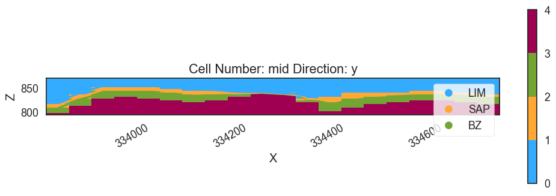
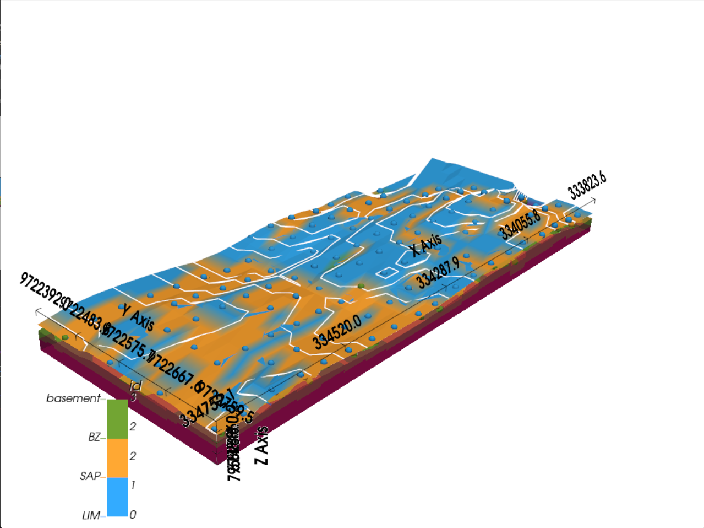

3D Geological Model with Gempy
Pendahuluan
Panduan ini disusun menggunakan Python dengan library seperti pandas, numpy, gempy, dan gempy_viewer untuk memproses data drill hole (collar, survey, litologi, dan assay) serta membuat model geologi 3D. Data yang digunakan dalam tutorial ini menggunakan data endapan nikel laterit dengan litologi seperti LIM (limonit), SAP (saprolit), dan BZ (batuan dasar). Adapun proses yang dilakukan meliputi penginputan data, desurvey drill hole, pengolahan litologi, pengaturan model geologi, penghitungan, dan visualisasi hasil dalam 2D dan 3D.
Blok 1: Pengaturan dan Impor library
# Install library yang diperlukan jika belum terinstall
# pip install pandas numpy pyvista matplotlib gempy gempy_viewer
import os
os.environ["DEFAULT_BACKEND"] = "PYTORCH"
import pandas as pd
import numpy as np
import gempy as gp
import gempy_viewer as gpv
from pyvista import set_plot_theme
set_plot_theme('document')
DEFAULT_BACKEND ke "PYTORCH" untuk perhitungan GemPy (PyTorch digunakan untuk operasi numerik yang lebih cepat).
- Mengimpor pandas untuk penanganan data, numpy untuk operasi numerik, gempy untuk pemodelan geologi, dan gempy_viewer untuk visualisasi.
- Mengatur tema plot PyVista ke 'document' untuk tampilan bersih bergaya publikasi.
- Output: Mencetak "Setting Backend To: AvailableBackends.PYTORCH".
Blok 2: Memuat dan Menampilkan Data
# Memuat data Anda
collar = pd.read_csv('collar.csv') # hole_id, y, x, z
survey = pd.read_csv('survey.csv') # hole_id, dip, azimuth, depth
lithology = pd.read_csv('lithology.csv') # hole_id, from_depth, to_depth, lithology
assay = pd.read_csv('assay.csv') # hole_id, from_depth, to_depth, nickel_grade
print(collar.head(), survey.head(), lithology.head(), assay.head())
collar: Lokasi collar drill hole (BHID, XCOLLAR, YCOLLAR, ZCOLLAR).
- survey: Data survei drill hole (BHID, DEPTH, AZIMUTH, DIP).
- lithology: Interval litologi (BHID, Fr., To, LITOLOGI).
- assay: Data assay dengan kadar nikel (BHID, Fr., To, Total Ni, dll.).
- Menggunakan head() dari pandas untuk melihat pratinjau data.
- Output: Menampilkan contoh baris dari setiap DataFrame, menunjukkan ID drill hole, koordinat, kedalaman, kemiringan, azimuth, litologi (misalnya LIM), dan nilai assay (misalnya kadar nikel).
Blok 3: Mengganti Nama Kolom
collar = collar.rename(columns={'BHID': 'hole_id', 'YCOLLAR': 'y', 'XCOLLAR': 'x', 'ZCOLLAR': 'z'})
survey = survey.rename(columns={'BHID': 'hole_id', 'DIP ': 'dip', 'AZIMUTH': 'azimuth', 'DEPTH': 'depth'})
lithology = lithology.rename(columns={'BHID': 'hole_id', 'Fr.': 'from_depth', 'To': 'to_depth', 'LITOLOGI': 'lithology'})
assay = assay.rename(columns={'BHID': 'hole_id', 'Fr.': 'from_depth', 'To': 'to_depth', 'Total Ni': 'nickel_grade'})
print(collar.head(), survey.head(), lithology.head(), assay.head())
BHID → hole_id, XCOLLAR → x).
- Mencetak DataFrame yang diperbarui untuk memastikan perubahan.
- Output: Sama seperti Blok 2, tetapi dengan nama kolom yang diperbarui (misalnya, hole_id, x, y, z, dll.).
Blok 4: Desurvey drill hole
Blok ini panjang, jadi saya akan membaginya menjadi dua bagian untuk kejelasan.
Bagian 4.1: Mendefinisikan Fungsi Desurvey
def desurvey(hole_collar, hole_survey, depth_interval=1):
hole_survey = hole_survey.sort_values('depth')
depths = hole_survey['depth'].values
dips = hole_survey['dip'].values
azimuths = hole_survey['azimuth'].values
current_x = hole_collar['x'].iloc[0]
current_y = hole_collar['y'].iloc[0]
current_z = hole_collar['z'].iloc[0]
desurveyed_points = []
for i in range(len(depths)):
if i == 0:
start_depth = 0
end_depth = depths[0]
start_dip = 0
start_azimuth = 0
end_dip = dips[0]
end_azimuth = azimuths[0]
else:
start_depth = depths[i-1]
end_depth = depths[i]
start_dip = dips[i-1]
start_azimuth = azimuths[i-1]
end_dip = dips[i]
end_azimuth = azimuths[i]
avg_dip = (start_dip + end_dip) / 2
avg_azimuth = (start_azimuth + end_azimuth) / 2
delta_d = end_depth - start_depth
if delta_d <= 0:
continue
dip_rad = np.radians(avg_dip)
azimuth_rad = np.radians(avg_azimuth)
delta_z = -delta_d * np.cos(dip_rad)
delta_x = delta_d * np.sin(dip_rad) * np.cos(azimuth_rad)
delta_y = delta_d * np.sin(dip_rad) * np.sin(azimuth_rad)
num_points = int(np.ceil(delta_d / depth_interval))
for j in range(num_points + 1):
d = start_depth + j * depth_interval
if d > end_depth:
d = end_depth
fraction = (d - start_depth) / delta_d if delta_d > 0 else 0
x = current_x + fraction * delta_x
y = current_y + fraction * delta_y
z = current_z + fraction * delta_z
desurveyed_points.append({'depth': d, 'x': x, 'y': y, 'z': z})
current_x += delta_x current_y += delta_y
current_z += delta_z
return pd.DataFrame(desurveyed_points)
hole_collar (titik awal) dan hole_survey (perubahan kemiringan, azimuth, kedalaman) sebagai masukan.
- Mengurutkan data survei berdasarkan kedalaman dan mengiterasi melalui segmen-segmen.
- Untuk setiap segmen:
- Menghitung rata-rata kemiringan dan azimuth.
- Mengonversi ke radian dan menghitung offset 3D (delta_x, delta_y, delta_z) menggunakan trigonometri.
- Menginterpolasi titik pada interval 1 meter (depth_interval=1) antara kedalaman awal dan akhir.
- Mengembalikan DataFrame dengan titik-titik desurvey (depth, x, y, z).
Bagian 4.2: Menerapkan Desurvey ke Semua drill hole
survey_grouped = survey.groupby('hole_id')
desurveyed_dict = {}
for hole_id, hole_survey in survey_grouped:
hole_collar = collar[collar['hole_id'] == hole_id]
if hole_collar.empty:
continue
desurveyed = desurvey(hole_collar, hole_survey)
desurveyed['hole_id'] = hole_id
desurveyed_dict[hole_id] = desurveyed
desurveyed_df = pd.concat(desurveyed_dict.values(), ignore_index=True)
hole_id.
- Untuk setiap drill hole:
- Mengekstrak data collar-nya.
- Memanggil desurvey untuk menghitung titik-titik 3D.
- Menambahkan hole_id ke hasil dan menyimpannya dalam kamus.
- Menggabungkan semua titik desurvey menjadi satu DataFrame (desurveyed_df).
- Output: Tidak ada Output langsung; menghasilkan desurveyed_df dengan koordinat 3D untuk semua drill hole.
Blok 5: Memproses Litologi
Blok ini juga panjang, jadi saya akan membaginya menjadi beberapa bagian.
Bagian 5.1: Mendefinisikan Fungsi pengolahan Litologi
# Mendefinisikan urutan stratigrafi
strat_order = {'LIM': 0, 'SAP': 1, 'BZ': 2}
def process_lithology(hole_lithology):
hole_lithology = hole_lithology.sort_values('from_depth')
processed = []
current_lith = None
current_from = None
current_thickness = 0
for i, row in hole_lithology.iterrows():
lith = row['lithology']
from_depth = row['from_depth']
to_depth = row['to_depth']
thickness = to_depth - from_depth
if current_lith is None:
current_lith = lith
current_from = from_depth
current_thickness = thickness
elif strat_order.get(lith, 999) < strat_order.get(current_lith, 999): # Tidak sesuai urutan
if thickness < current_thickness:
continue
else:
processed.append({'from_depth': current_from, 'to_depth': from_depth, 'lithology': current_lith})
current_lith = lith
current_from = from_depth
current_thickness = thickness
else:
if lith == current_lith:
current_thickness += thickness
else:
processed.append({'from_depth': current_from, 'to_depth': from_depth, 'lithology': current_lith})
current_lith = lith
current_from = from_depth
current_thickness = thickness
if current_lith:
processed.append({'from_depth': current_from, 'to_depth': to_depth, 'lithology': current_lith})
if not any(p['lithology'] == 'Basement' for p in processed):
last_to = processed[-1]['to_depth']
processed.append({'from_depth': last_to, 'to_depth': last_to + 1, 'lithology': 'Basement'})
return pd.DataFrame(processed)
strat_order (LIM → SAP → BZ).
- Mengurutkan data litologi berdasarkan kedalaman.
- Mengiterasi melalui interval:
- Menggabungkan interval berturut-turut dengan litologi yang sama.
- Menyelesaikan unit yang tidak sesuai urutan (misalnya SAP di atas LIM) dengan mempertahankan unit yang lebih tebal.
- Menambahkan lapisan tipis “Basement” di bagian bawah jika tidak ada.
- Mengembalikan DataFrame dengan interval yang diproses.
Bagian 5.2: Menerapkan pengolahan dan Menyiapkan Titik Permukaan
# Menerapkan ke semua lubang
lithology_grouped = lithology.groupby('hole_id')
processed_lithology = pd.concat([process_lithology(group) for _, group in lithology_grouped],
keys=lithology_grouped.groups.keys()).reset_index(level=0).rename(columns={'level_0': 'hole_id'})
# Menyiapkan titik permukaan dan mengekstrak bagian atas LIM untuk topografi
surface_points = []
lim_top_points = [] # Untuk topografi
for hole_id, hole_lithology in processed_lithology.groupby('hole_id'):
if hole_id not in desurveyed_dict:
continue
hole_desurveyed = desurveyed_dict[hole_id]
depth_to_coords = dict(zip(hole_desurveyed['depth'], hole_desurveyed[['x', 'y', 'z']].to_numpy()))
lim_found = False
for _, row in hole_lithology.iterrows():
from_depth = row['from_depth']
from_coords = depth_to_coords.get(from_depth)
if from_coords is not None:
surface_points.append({
'x': from_coords[0],
'y': from_coords[1],
'z': from_coords[2],
'formation': row['lithology']
})
# Menangkap bagian atas LIM
if row['lithology'] == 'LIM' and not lim_found:
lim_top_points.append({
'x': from_coords[0],
'y': from_coords[1],
'z': from_coords[2]
})
lim_found = True # Hanya mengambil LIM paling atas
points_df = pd.DataFrame(surface_points)
lim_top_df = pd.DataFrame(lim_top_points)
hole_id dan memproses setiap kelompok.
- Menggabungkan hasil menjadi processed_lithology.
- Memetakan koordinat desurvey ke kedalaman litologi.
- Membuat:
- surface_points: Semua batas litologi dengan koordinat 3D.
- lim_top_points: Titik-titik paling atas LIM untuk topografi.
- Mengonversi ke DataFrame (points_df, lim_top_df).
Blok 6: Menginisialisasi Model Geologi
all_x = points_df['x'].values
all_y = points_df['y'].values
all_z = points_df['z'].values
extent = [
np.min(all_x) - 5, np.max(all_x) + 5,
np.min(all_y) - 5, np.max(all_y) + 5,
np.min(all_z) - 10, np.max(all_z) + 10
]
geo_model = gp.create_geomodel(
project_name='Nickel_Mine_Model',
extent=extent,
resolution=[20, 20, 20],
structural_frame=gp.data.StructuralFrame.initialize_default_structure()
)
# Mengatur bagian atas LIM sebagai topografi menggunakan set_topography_from_arrays
topography_points = lim_top_df[['x', 'y', 'z']].to_numpy()
gp.set_topography_from_arrays(
grid=geo_model.grid,
xyz_vertices=topography_points # Mengirimkan array penuh (n, 3)
)
print("Grid aktif:", geo_model.grid.active_grids)
geo_model dengan resolusi grid 20x20x20.
- Menggunakan bagian atas LIM untuk menentukan topografi.
- Mencetak grid aktif (misalnya, DENSE, TOPOGRAPHY).
- Output: "Grid aktif: GridTypes.DENSE|TOPOGRAPHY|NONE".
Blok 7: Mendefinisikan Elemen Struktural
unique_lithologies = ['LIM', 'SAP', 'BZ'] # Menyertakan Basement secara eksplisit
colors = ['#33ABFF', '#FFA833', '#72A533']
elements = []
for i, lith in enumerate(unique_lithologies):
lith_points = points_df[points_df['formation'] == lith]
if lith_points.empty:
continue
element = gp.data.StructuralElement(
name=lith,
color=colors[i],
surface_points=gp.data.SurfacePointsTable.from_arrays(
x=lith_points['x'].values,
y=lith_points['y'].values,
z=lith_points['z'].values,
names=lith
),
orientations=gp.data.OrientationsTable.initialize_empty()
)
elements.append(element)
geo_model.structural_frame.structural_groups[0].elements = elements
geo_model.structural_frame.structural_groups[0].name = 'Stratigraphic_Series'
StructuralElement dengan titik permukaan untuk setiap litologi.
- Menambahkan elemen ke kerangka struktural model sebagai seri stratigrafi.
Blok 8: Menambahkan Orientasi
centroid_x = points_df['x'].mean()
centroid_y = points_df['y'].mean()
centroid_z = points_df['z'].mean()
gp.add_orientations(
geo_model=geo_model,
x=[centroid_x],
y=[centroid_y],
z=[centroid_z],
elements_names=[elements[0].name], # LIM
pole_vector=[np.array([0, 0, 1])]
)
Blok 9: Menonaktifkan Anisotropi
geo_model.update_transform(gp.data.GlobalAnisotropy.NONE)
Blok 10: Menghitung Model
gp.compute_model(geo_model, engine_config=gp.data.GemPyEngineConfig(dtype='float64'))
"Solusi: 4 Tingkat Octree, 3 Mesh DualContouring".
Blok 11: Visualisasi 2D
gpv.plot_2d(geo_model, cell_number='mid', direction='y', show_data=False, show_results=True)
Output 
Blok 12: Visualisasi 3D
plotter = gpv.plot_3d(
geo_model,
show_surfaces=True,
show_topography=True,
image=False,
plotter_type='basic', # Lebih sederhana untuk performa
kwargs_plot_structured_grid={'opacity': 0.8, 'lighting': True}
)
Output 
Ringkasan
Notebook ini memproses data drill hole untuk mengolah dan memvisualisasikan model geologi 3D dari data pertambangan nikel laterit. Langkah-langkah-langkah meliputi: 1. Memuat dan menyiapkan data. 2. Melakukan desurvey drill hole untuk mendapatkan koordinat 3D. 3. Memproses litologi untuk memastikan urutan stratigrafi. 4. Mengatur model GemPy dengan topografi dan elemen struktural. 5. Menghitung dan memvisualisasikan model dalam 2D dan 3D.